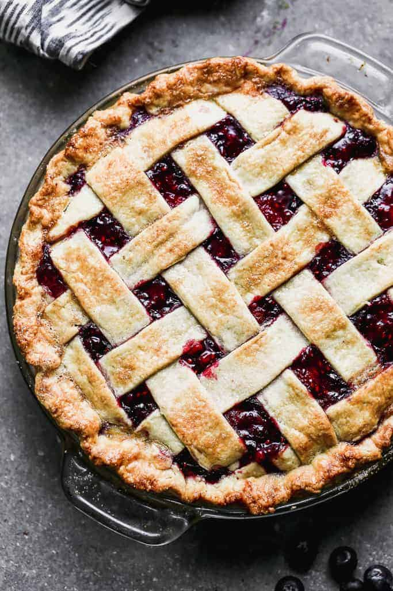

You just can’t beat this easy and delicious homemade Triple Berry Pie! It holds together
perfectly every
single
time, and you can use fresh or frozen blueberries, raspberries and blackberries.

Ingredients
Instructions
Cook berries: Add berries, sugar and lemon juice to a large saucepan over medium
heat.
Simmer, until warm and juicy, about 5-10 minutes, gently stirring occasionally. (You can taste it at
this
point and see if it's sweet enough for your liking. I don't like to make mine too sweet, but if you
want
it
sweeter you can add ¼ cup more sugar.)
Thicken filling: Spoon out about ½ cup of the juice from the pan into a bowl. Stir
cornstarch into the juice until smooth.
Bring pot of berries back to a simmer and slowly pour in the cornstarch. Gently stir mixture (being
careful
not to mash the berries), until thickened, about 2-5 minutes.
Cool and add to pie shell. Remove from heat and stir in the butter. Allow to cool
for
15
minutes. Pour mixture into unbaked pie shell (in a 9 in deep dish pan).
Add lattice top or a whole top with holes pricked on top for steam to escape. (See
directions for lattice crust below).
Pinch the edges of the top and bottom pie crusts together and crimp the edge, if you like. Brush a
thin
layer of beaten egg white over the top of the pie and sprinkle lightly with sugar.
Bake at 400 degrees F for 40-45 minutes. Check it after about 25 minutes and place
a
piece
of tinfoil over it if the top crust is getting too brown.
Remove to a wire cooling rack and allow to cool for several hours. Once cooled completely, you can
cut
into
it or cover it and refrigerate it overnight to serve the next day.
For the lattice crust:
Roll out crust. Roll our your crust on a lightly floured counter or on a piece of
parchment
paper. (I like to place a piece of parchment paper on top of a damp kitchen towel to keep it from
moving
around). Roll the pie crust into a large circle that's about 1-2 inches larger than then top edge of
your
pie dish.
Cut strips. Use a pizza cutter to strips. cut them as wide as you'd like them to be
(there's really no right or wrong way).
Lay first layer of strips. Lay your longest strip across the middle of the pie then
lay
a
few shorter strips on either side, parallel to each other and spaced evenly.
Fold pack even numbered strips. Fold back the second and 4th strip and lay a
shorter
strip
of dough perpendicular to other dough strips. Unfold those dough strips over the new strip.
Fold back odd numbered strips: Fold back the first, third and fifth strips in the
same
direction and lay another dough strip across the pie. Unfold the first, third and fifth strips over
the
new
strip.
Repeat steps 4 and 5 until pie is covered with a lattice crust.
Trim dough strips. If you dough strips hang over the edge of the pie, trim them to
the
edge.
Pinch crusts together. Pinch the lattice top with the bottom crust to form one
unified
outer edge. Crimp edges.